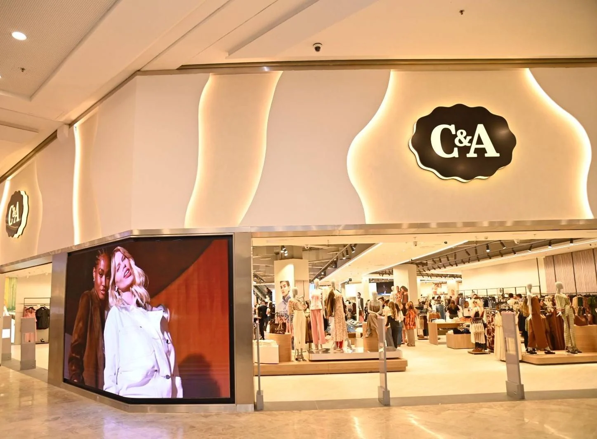
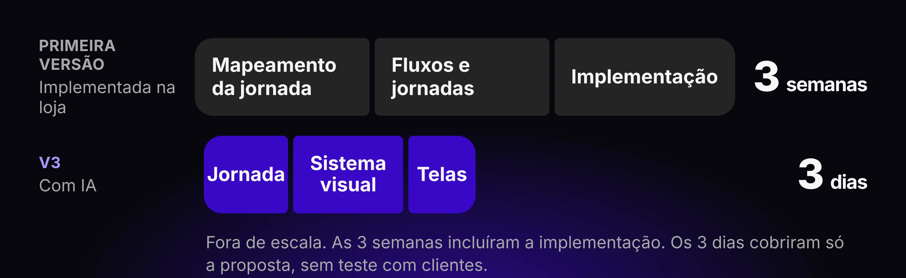
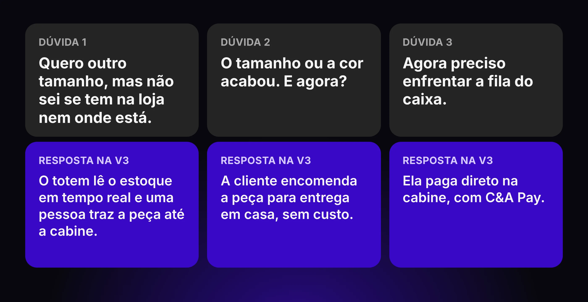
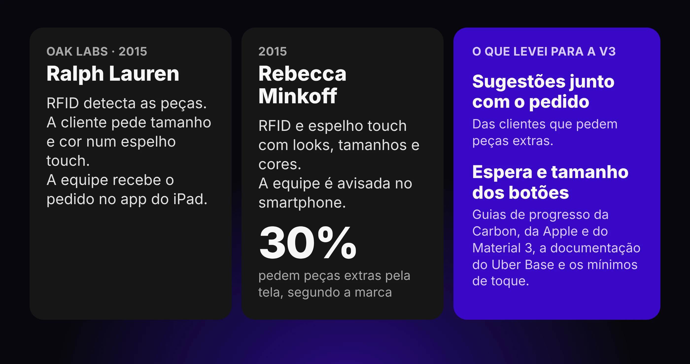
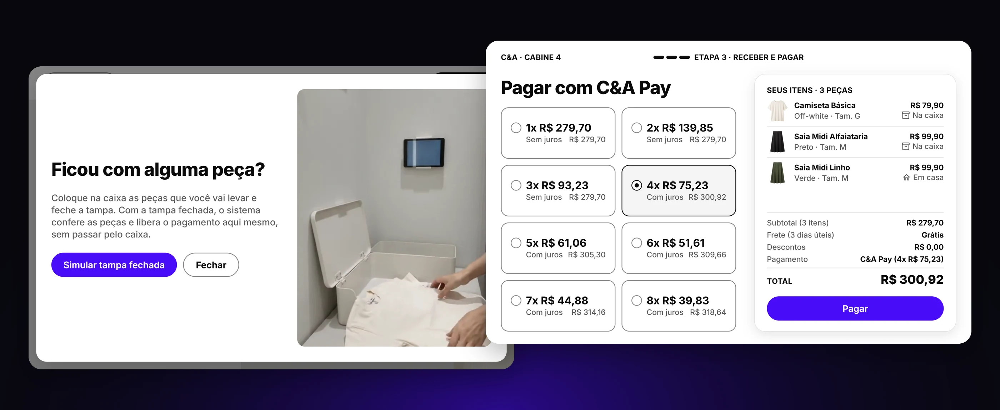
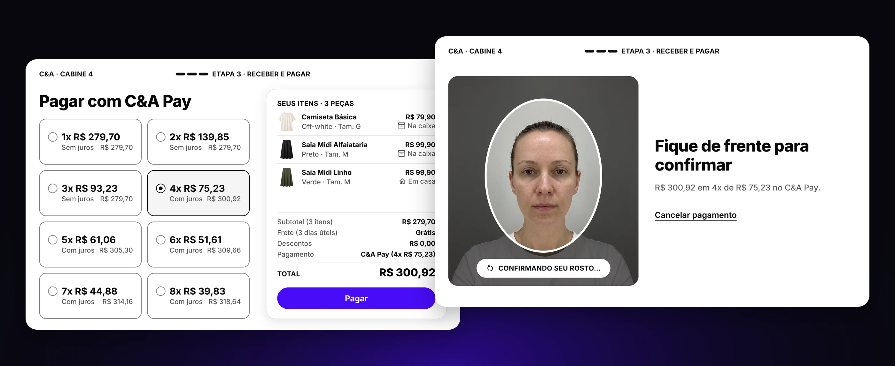
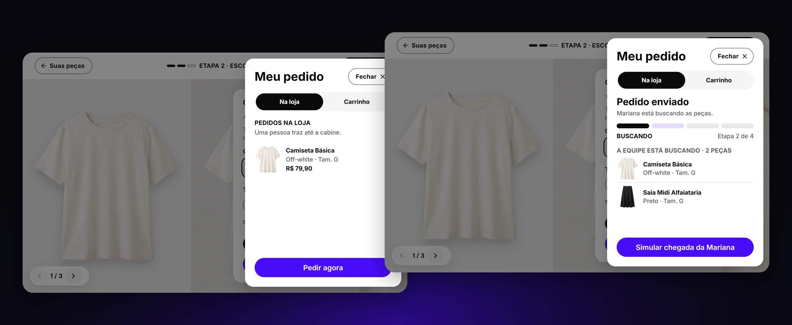
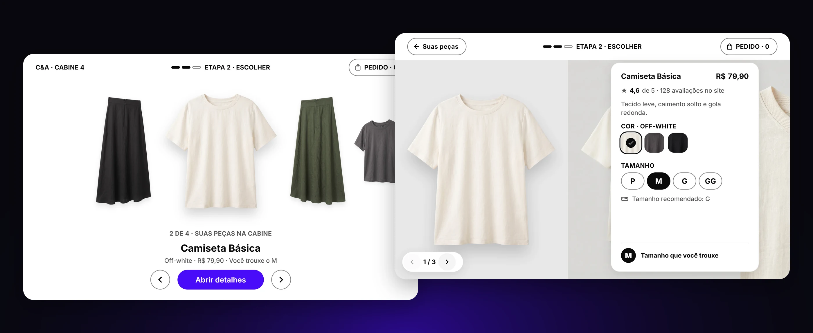
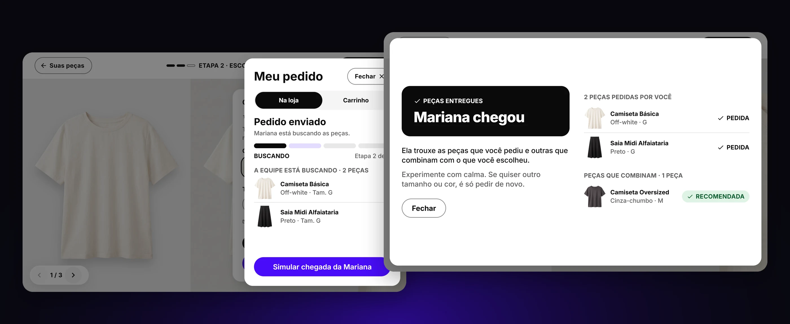
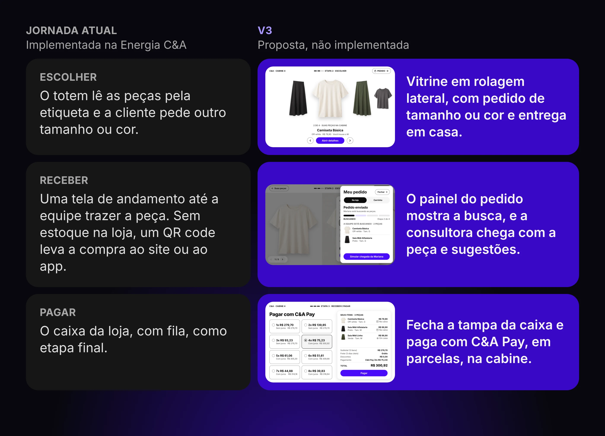

Contexto
A Energia C&A é uma loja-conceito, inaugurada em agosto de 2025, onde a empresa testa tecnologia em contato direto com o cliente. A primeira versão do provador levou à cabine um totem de tela sensível ao toque, que reconhecia sozinho as peças que a cliente levou para dentro, por meio de etiquetas lidas à distância.
Dali, ela pedia outro tamanho ou cor e acompanhava o pedido numa tela de andamento, parecida com a de um app de transporte, enquanto uma consultora da loja buscava a peça e a trazia até a cabine.

Meu papel
Desenhei os fluxos e as jornadas da primeira versão, implementada na loja, num projeto de 3 semanas que incluiu todo o mapeamento da jornada e a implementação.
Depois conduzi a evolução do projeto, ainda não implementada. Refiz a jornada, o sistema visual e as telas com design assistido por IA em 3 dias: usei o Claude Design para as telas e o sistema visual, e o Gemini para os vídeos e as fotos. Cada decisão passou por mim.

Problema
Para a cliente, o provador gerava três perguntas sem resposta. Se ela quer outro tamanho, não sabe se há na loja nem onde está. Se o tamanho ou a cor acabou, não sabe o que fazer a seguir. E, no fim, tem de enfrentar a fila do caixa.
A primeira versão respondia ao pedido de tamanho, mas o negócio queria mais: que o provador levasse mais clientes a usar o C&A Pay, que facilitasse o parcelamento e que aumentasse o valor de cada compra, sem que a equipe do salão o visse como concorrente. Como transformar um provador que ajuda na prova em um provador que também fecha a venda?

Benchmarks
Estudei os provadores conectados que surgiram em 2015, como os da Ralph Lauren e da Rebecca Minkoff, onde a cliente pedia tamanhos e cores por uma tela e a equipe era avisada pelo celular. Segundo a própria marca, 30% das clientes pediam peças extras pela tela, o que me levou a incluir sugestões junto com o pedido.
Olhei também como grandes sistemas de design mostram "o pedido está em andamento" e quais tamanhos de botão são confortáveis num aparelho fixo. Isso definiu como a espera aparece e o tamanho dos botões, já que o totem é usado em pé e de passagem.

Decisões de design
Respondi às três dúvidas da cliente dentro da própria cabine
O totem lê o estoque em tempo real e uma consultora traz a peça direto para a cabine, o que elimina o "será que tem?". Se o tamanho ou a cor acabou, a cliente encomenda a peça para entrega em casa, sem custo. E quando decide o que levar, guarda as peças numa caixa com tampa e, ao fechá-la, a tela passa para o pagamento, sem fila.
Descartei o QR code da primeira versão, que levava a cliente a terminar a compra em outro aparelho, e o caixa da loja como etapa final, porque as duas coisas tiravam a cliente do provador no momento de decidir.

Atrelei o provador ao C&A Pay, onde o negócio já mede valor
Clientes que pagam com C&A Pay compram com mais recorrência, então a evolução cria uma jornada de compra exclusiva do C&A Pay dentro do provador, e a experiência passa a fazer parte da proposta de valor desse meio de pagamento. Para a cliente, pagar ali é uma ida à loja mais premium, que resolve dores que ela já tinha.
A leitura do rosto confirma a compra com segurança, e as parcelas aparecem com clareza antes do toque em pagar. Apostei na transparência como a forma mais honesta de vender parcelamento com juros: a cliente escolhe a flexibilidade que quer e sabe o que está contratando. Essa lógica vem do Self-Checkout, onde a jornada redesenhada, com caminho próprio para o C&A Pay e parcelas claras, dobrou a adesão ao C&A Pay no canal.

Fiz a consultora ganhar com cada venda feita no provador
Se o pagamento sai do caixa, a consultora do salão pode sentir que o totem tira a sua comissão. Quem traz as peças para a cabine é bonificada por cada venda concluída ali, o que transforma o provador num aliado da equipe, e não num concorrente.

Mostrei muitas peças como uma arara de roupas
Para exibir muitos itens sem confundir a cliente, a vitrine rola para os lados, com a peça central em destaque e as vizinhas parcialmente visíveis, no estilo de uma pilha de capas de disco. A metáfora lembra uma arara de loja, mantém a cliente situada no todo e dá um efeito visual agradável.
Descartei uma grade com rolagem vertical, que perdia a peça em destaque e a ideia de arara.

Levei a inteligência de recomendação para a consultora
Para vender mais por cliente sem sobrecarregá-la com escolhas, a sugestão de peças não aparece enquanto ela escolhe: ela chega com a consultora. Ao receber o pedido, a consultora consulta as recomendações do sistema de vendas da C&A para aquela cliente e traz, além do que foi pedido, peças que combinam. Só quando as peças chegam à cabine a tela as lista, à parte das que a cliente pediu, em "Peças que combinam".
A tecnologia fica invisível e o atendimento fica padronizado, independentemente do quanto a consultora conheça de moda.

Resultado
Este case não traz métricas de uso. A evolução do projeto ainda não foi implementada, então não tem resultado medido, e o que posso afirmar é o tempo: 3 semanas para a primeira versão e 3 dias para a segunda.
As telas de pagamento, porém, não partem do zero: elas aplicam ao provador o que já funcionou no Self-Checkout, onde a adesão ao C&A Pay no canal aumentou 100%. A V3 ainda não tem medição própria.
Os números não são equivalentes, porque as 3 semanas incluíram o mapeamento da jornada e a implementação, e os 3 dias cobriram só a proposta, sem teste com clientes.

Aprendizados
Uma experiência bem desenhada ganha força quando nasce ligada a uma meta de negócio que se possa medir. Foi o que busquei ao atrelar o provador ao C&A Pay, e hoje eu já combinaria essa métrica antes de desenhar a primeira tela.
A IA acelerou as telas e o sistema visual, mas quem decidiu como o provador deveria funcionar foi a leitura da operação da loja. Antes de chamar a nova versão de melhor, eu a levaria a um teste em loja, porque 3 dias contra 3 semanas mede esforço, não resultado.